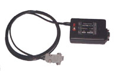
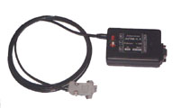

http://2a2.ru/
| тел. +7 927 800 76 16 http://2a2.ru/ |
|---|
Система управления дизельным двигателем ГАЗ-560 (STEYR) с контроллером VDO/ШТАЙЕРПри проведении диагностики инжекторных двигателей использовались приборы СТМ-2, СТМ-3, СТМ-4 и адаптер АПМ-1.1

 

ПЕРЕЧЕНЬ КОДОВНажмите на код интересующей Вас неисправности.
|
•главная •где купить •цены •продукция •документация •программы •коды ГАЗ •ЭСУД ГАЗ •ЭСУД PATRIOT •ЭСУД ВАЗ •ЭСУД STEYR •автосервисы •сайты e-mail: •a2@2a2.ru |